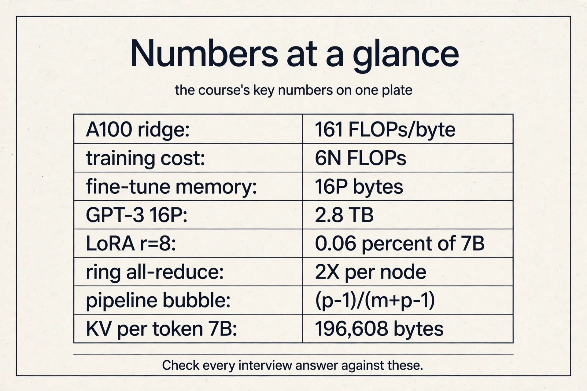
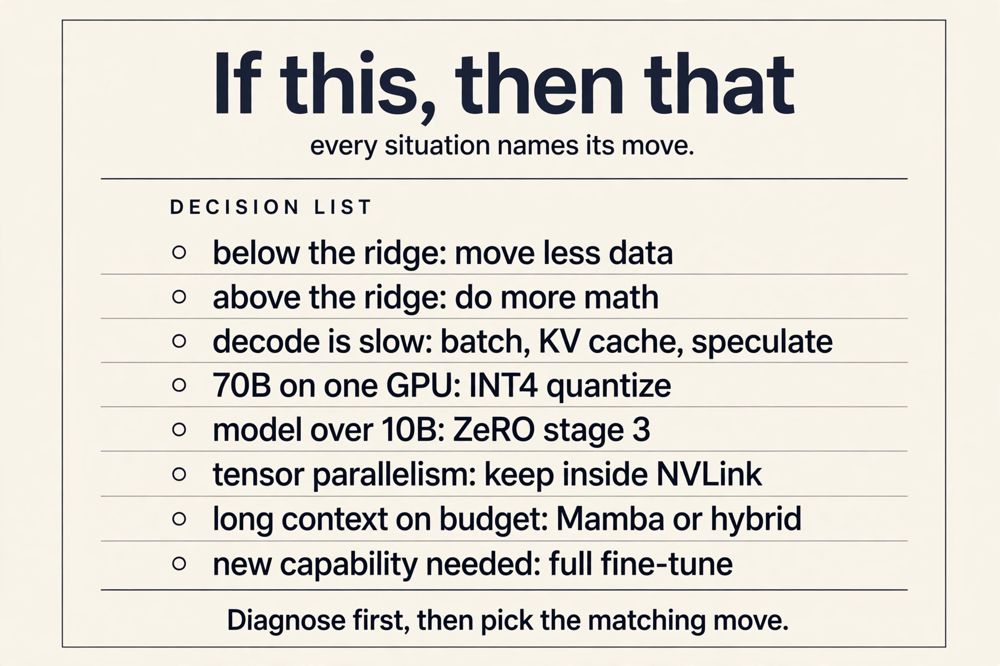
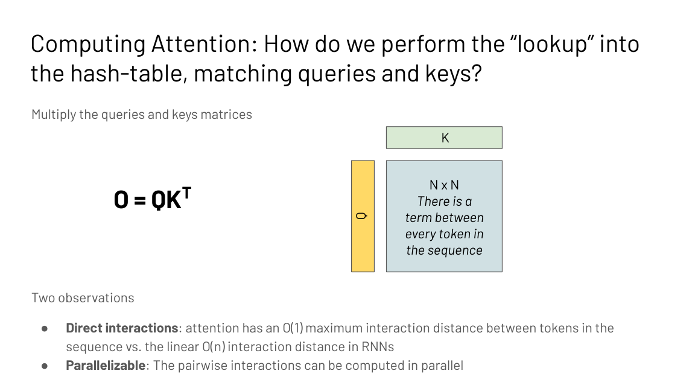
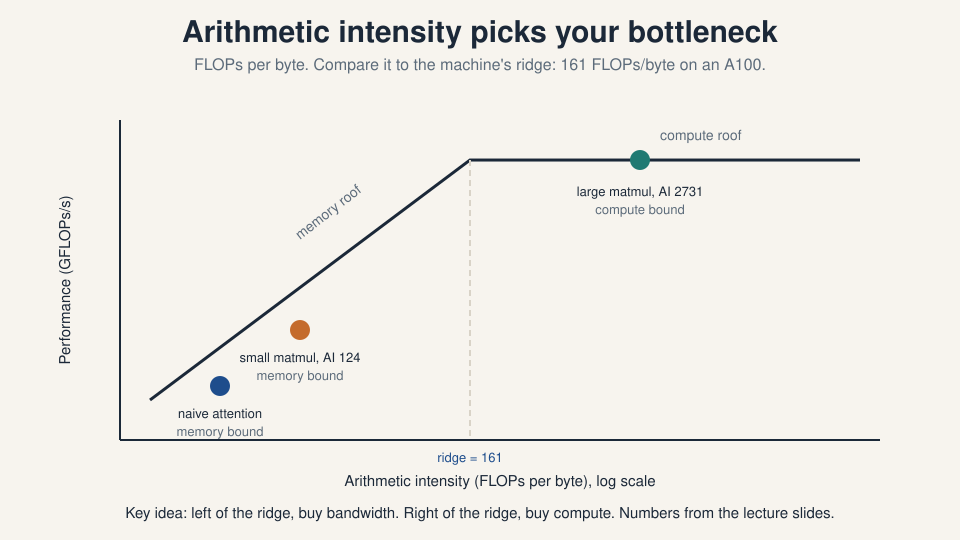
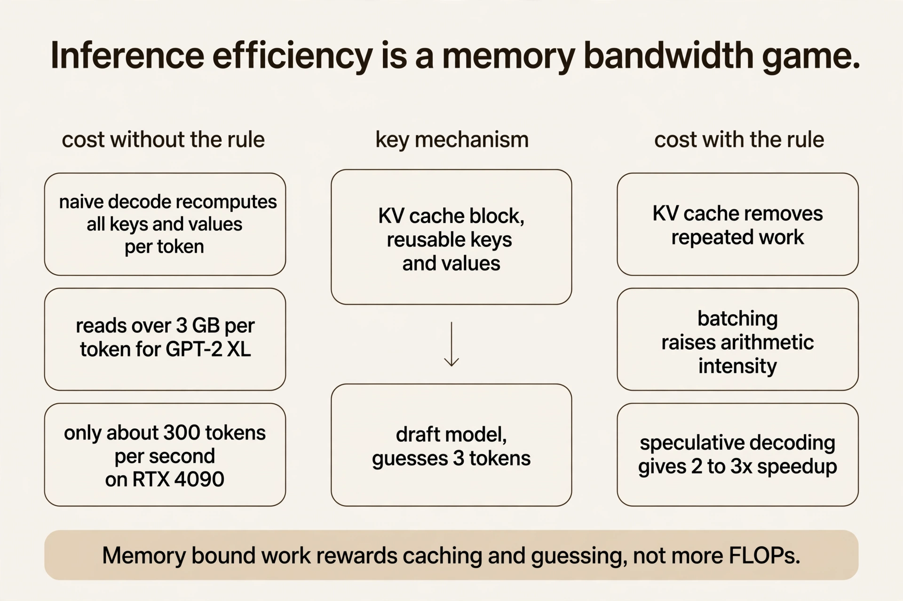
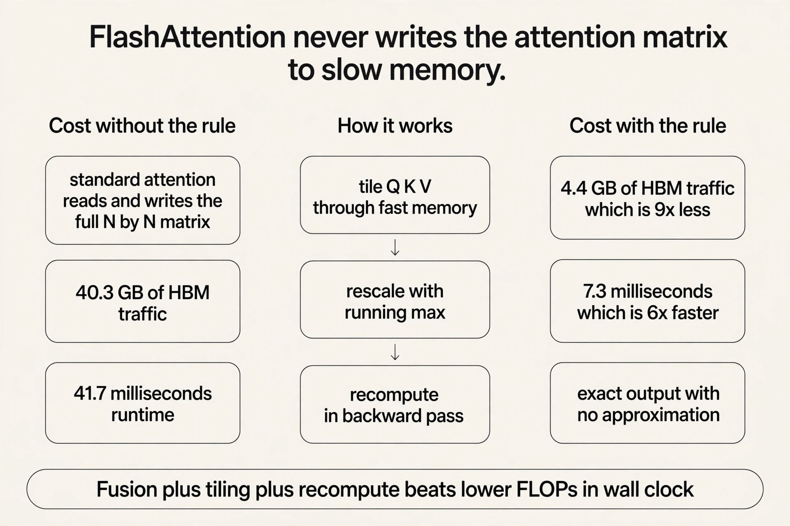

CS229S Crash Course
30 minutes · interview speed
This page tells the whole systems story fast. Each section gives you the working version: enough to answer interview questions with confidence. Links at the end of each section take you into the full lesson when you want the derivations and the follow-ups.


1. Three gaps drive the whole course
Models keep growing because scaling laws reward size and because abilities like few-shot learning exist only at scale. But the arithmetic is brutal. Training compute demand grows 32x every 2 years while Moore’s law gives 2x. Model size outruns the A100’s 40 or 80 GB of memory, so new models die with out-of-memory on arrival. And paper speed is not wall-clock speed: a linear-time attention algorithm loses to hardware-aware FlashAttention on a real GPU. Training is a tens-of-millions upfront bill. One inference call is under $0.0001 but compounds with every user. Systems for ML closes all three gaps, one layer of the stack at a time.

2. The transformer block you are optimizing
A language model factors into next-token predictions via the chain rule. The transformer mixes tokens with attention: queries look up keys, values mix by similarity, and every token meets every other token in one step. That single property, O(1) interaction distance, is what made transformers win. Its price is quadratic: the N by N score matrix. Everything in this course is an answer to that price.

3. Diagnose first: memory bound or compute bound
Every kernel is load, compute, write, and total time is max(Tmem, Tmath). Arithmetic intensity is FLOPs per byte. The device ridge is peak FLOPs over peak bandwidth, 161 FLOPs per byte on an A100. Below the ridge you are memory bound: move less data, fuse kernels, tile better. Above it you are compute bound: do more math, use tensor cores. The same matmul sits at 124 with N=128 and 2731 with N=8192, so the shape is part of the diagnosis. Never optimize before diagnosing.

4. The device block
One GPU: 108 SMs, registers, shared memory, L2, 40 GB of HBM. A kernel loads from HBM, computes on-chip, writes back. Threads run in warps of 32 under SIMT. One node: 8 GPUs on NVLink. One cluster: nodes on InfiniBand, much slower. Tiling keeps data on-chip and halves redundant loads. Tensor cores multiply 16 by 16 tiles up to 16x faster, so express work as big matmuls. The hierarchy decides everything: frequent collectives stay inside the node, rare ones span the cluster.

5. Training costs 3x forward, and decoding is memory bound
Backprop on the toy graph shows the two systems facts: reuse intermediate derivatives, and store activations for the backward pass. Forward is 2BHN per MLP layer. Backward is 4BHN, so a training step costs about 3x one forward pass plus activation storage. Inference breaks differently: autoregressive decoding recomputes the whole prefix per token. Past keys and values never change, so cache them: the KV block costs 2 x 2 x layers x dmodel bytes per token, and a 7B model on a 40 GB A100 caches 130k tokens, batch 128 at length 1024. Decoding reads over 3 GB per GPT-2-XL token. The RTX 4090 has compute for 30,000 tokens/s but decodes about 300. Memory sets the serving limit, not FLOPs.

6. Speculative decoding: guess, then verify
Decoding is memory bound, so extra compute is nearly free. A small draft model, about 15x smaller than the main one, guesses the next tokens. The big model checks them all in one parallel batch. The agreed prefix is accepted for free. Wrong guesses cost little because the batch was memory bound anyway. Result: 2 to 3x speedup on 11B to 137B models. It is branch prediction for language models, and the speedup is capped by how often the draft agrees.
7. FlashAttention: never write the N by N matrix
Standard attention is memory bound: the bill is reads and writes around the score matrix, not FLOPs. The field tried approximating first (sparse, low-rank, kernel), and paid in quality. FlashAttention asked whether exactness could be fast. Tile Q, K, V through SRAM so the N by N matrix never exists. Track a running softmax sum and max per tile and rescale each partial output by its share of the true totals, which is exact. Recompute tiles in the backward pass from cached vectors of size N. 9x less HBM traffic, 13% more FLOPs, 6x faster. Lower FLOPs do not imply wall-clock speedup.

8. Shrink the model: prune, quantize, distill
Three cuts, one smaller model. Pruning removes weights, but only structured patterns speed up hardware: 2:4 N:M sparsity matches Ampere tensor cores for a real 50% cut. Quantization spends fewer bits: k-means stores indices plus centroids (3.2x on the toy, compute still FP32), linear quantization runs the whole matmul in integers via scale and zero-point. Distillation trains a small student on the teacher’s probability distributions, transferring the uncertainty, not just the labels. Each trades a little accuracy for a lot of memory. Pruning plus quantization compose.

9. Fine-tune the behavior, then fine-tune the cost
Base models complete text. Instruction tuning teaches them to follow it. RLHF trains a reward model on human preference rankings and optimizes it. Constitutional AI replaces tens of thousands of labels with about ten human-written principles and AI feedback. Then the systems problem: fine-tuning costs over 10x the weights in memory, and one full model per task is undeployable. PEFT tunes almost nothing: prompt tuning trains input embeddings on a frozen model, and LoRA trains low-rank adapters that merge into the weights after training, so inference pays zero latency.
10. Attention-free architectures and the recall test
Convolutions via the FFT run in O(N log N), exact. Linear recurrences train as convolutions and sample in O(1), and that duality is S4, which solved the long-range benchmarks. But language resisted: at 360M scale, attention hit 8.39 perplexity against 9.79 to 13.13 for the SSMs. The diagnosis is recall: grounding predictions in context needs input-dependent mixing, and convolutional mixing is fixed. The direction is sub-quadratic plus selective: Mamba, gated linear attention. Measure efficiency on the task, not on asymptotics.
11. Parallelism: split what does not fit
Data parallelism splits the batch and all-reduces gradients. The ring version is bandwidth-optimal, with per-node traffic approaching 2X at any GPU count. Mixed-precision Adam needs 16P bytes. ZeRO partitions it down to 16P/Nd. Tensor parallelism shards attention and MLP weights Megatron-style and must stay inside NVLink, because its all-reduces are constant. Pipeline parallelism stages layers and flows microbatches, with 1F1B shrinking the bubble, and needs only point-to-point sends. The decision: it fits, use data. One fast node, use tensor. many nodes, use pipeline. Combine all three at thousand-GPU scale. Alpa automates the search.

One-glance tables
Ridges (FLOPs/byte): A100 161, H100 295, H200 206, B200 FP16 281, B200 FP8 562. Below your ridge: memory bound, move less data. Above: compute bound, do more math.
The 16P ladder (10B, 8 GPUs): baseline 160 GB, ZeRO-1 55 GB, ZeRO-2 37.5 GB, ZeRO-3 20 GB. Climb only as far as the memory gap demands.
Parallelism decision: fits on one GPU: data. One fast node: tensor (NVLink only). Many nodes: pipeline. Thousand-GPU scale: all three (PTD). Alpa automates the search.
Quantization family: GPTQ for a quick one-shot shrink, AWQ for the best 4-bit accuracy, FP8 when hardware and training support it end to end, INT4 to fit 70B on one 80 GB GPU (35 GB weights).
Recall needs what: attention 8.39 vs SSM 9.79-13.13 perplexity at 360M. Content lookup needs input-dependent mixing: attention, selective SSMs, hybrids.
Memory aids
Mnemonic for the six performance principles: Fuse, Parallelize, Tile, Cache-or-recompute, Pipeline, fast Path. Say “FPT-CPP” before you touch any kernel.
Never-confuse pairs:
- Latency (time per item) vs throughput (items per second) vs bandwidth (the hardware ceiling).
- Tmem/Tmath (a ratio) vs arithmetic intensity (FLOPs per byte) vs the ridge (peak FLOPs over peak bandwidth).
- Prefill (compute bound, parallel) vs decode (memory bound, sequential).
- RLHF (reward model plus RL) vs DPO (one loss on the preference pairs).
- Data (split batch) vs tensor (split weights, NVLink only) vs pipeline (split layers, microbatches).
- Magnitude pruning (a weight statistic) vs regression pruning (an output statistic).
- Temperature T = 1 (hard labels) vs T = 5 (dark knowledge revealed).
- KV caching (wins compute bound) vs recomputation (wins memory bound).
If-this-then-that:
- Intensity below the ridge: fuse, tile, move less data.
- Intensity above the ridge: more math, tensor cores.
- Decode too slow: batch, KV cache, speculate.
- 70B on one 80 GB GPU: INT4 (35 GB weights).
- Model past 10B: ZeRO stage 3.
- Tensor parallelism: never across nodes.
- Long context on a budget: Mamba or a hybrid.
- Genuinely new capability: full fine-tuning, not LoRA.
Rapid-fire Q&A
Q: Memory bound or compute bound, and how do you know? A: Compare arithmetic intensity (FLOPs/byte) to the ridge (161 on A100). Below: memory bound, move less data. Above: compute bound, do more math.
Q: Why is decoding slow? A: One token costs a full model read. Small batches are memory bound. Fix with batching, KV caching, and speculative decoding.
Q: What is FlashAttention in one sentence? A: Exact attention that never materializes the N by N matrix: tile through SRAM, rescale the softmax online, recompute backward. 9x less traffic, 6x faster.
Q: When does KV caching win? A: When compute bound: the extra memory traffic is the cheaper side. When memory bound, recomputation can win instead.
Q: LoRA vs full fine-tuning for 50 tasks? A: One 14 GB base plus 50 tiny adapters versus 50 copies of 14 GB. The adapters merge into the weights, so inference pays nothing.
Q: Why did sparsity need 2:4 structure? A: Unstructured pruning scatters memory access and rarely speeds up. 2:4 matches Ampere sparse tensor cores: regular, fast, 50% fewer weights.
Q: Data, tensor, or pipeline parallelism? A: Model fits: data. One fast node: tensor (NVLink only). Many nodes: pipeline. Combine at scale.
Q: Why do convolutions lose to attention on recall? A: Recall needs input-dependent mixing. Attention adapts per example. Convolutional mixing is fixed. Flexibility beats asymptotics.
Q: A 10B model, 8 GPUs. Which ZeRO stage? A: Stage 1 gives 55 GB per GPU (fits 80 GB). Stage 2 gives 37.5 GB. Stage 3 gives 20 GB for 1.5x communication. Match the stage to the gap, not the maximum.
Q: How many trainable parameters in LoRA r = 8 on Wq, Wv, 7B? A: 2 x 4096 x 8 = 65,536 per matrix. Times 2 matrices times 32 layers: 4.2M, 0.06 percent of 7B.
Q: Ring all-reduce with N = 16, X = 4 GB? A: 30 iterations, 7.5 GB per node. As N grows, per-node traffic approaches 2X: bandwidth-optimal.
Q: Pipeline bubble with 4 stages and 8 microbatches? A: (4-1)/(8+4-1) = 3/11 = 27 percent. Double the microbatches to cut it to 16 percent.
Q: DPO versus RLHF in one breath? A: RLHF trains a reward model then RL-optimizes against it. DPO trains one loss directly on the preference pairs. Same inputs, one stable run.
Q: Why does iterative pruning beat one-shot? A: One 90 percent cut destroys co-adapted structure. Five rounds of 37 percent with fine-tuning between reach the same sparsity with accuracy intact.
Q: What does the distillation temperature do? A: T = 1 gives near-hard labels (0.98/0.02). T = 5 softens to 0.69/0.31 and reveals the teacher’s uncertainty. Train at high T, deploy at T = 1.
Q: FFT convolution theorem in one line? A: Time-domain convolution equals frequency-domain pointwise multiplication. O(n^2) becomes O(n log n). Exact, not approximate.
Go deeper
- FlashAttention explained from zero: https://www.youtube.com/watch?v=9vcsZK3a76w
- LoRA explained: low-rank adaptation: https://www.youtube.com/watch?v=t509sv5MT0w
- Mamba explained: selective state spaces: https://www.youtube.com/watch?v=9dSkvxS2EB0
- FlashAttention paper (Dao et al.): https://arxiv.org/abs/2205.14135
- LoRA paper (Hu et al.): https://arxiv.org/abs/2106.09685
- Mamba paper (Gu and Dao): https://arxiv.org/abs/2312.00752
- ZeRO paper (Rajbhandari et al.): https://arxiv.org/abs/1910.02054